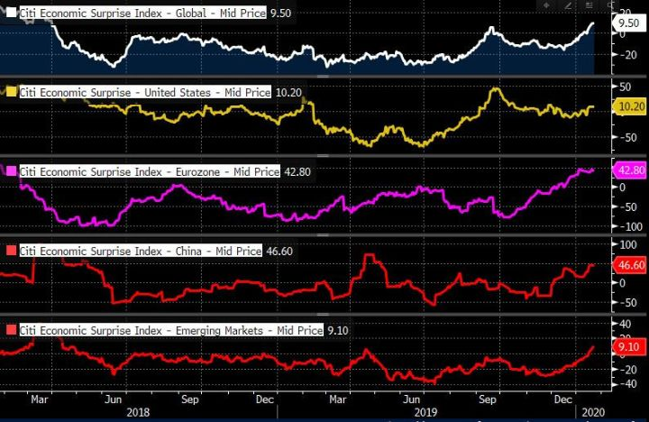

Viikon kuumat linkit
Linkkejä matkan varrelta... hyvää viikonloppua!
“The best way to predict the future is to create it.” - Peter Drucker
Minne sijoittaa, jos sijoitushorisontti on 10-30 vuotta? Kehittyvissä maissa asuvat ~90% maailman alle kolmekymppisistä. Suotuisten demografioiden lisäksi kehittyvät taloudet ovat perässähiihtäjän edun turvin voineet rakentaa talouksiensa rakenteet suoraan nykyaikaisemmiksi. Lopputuloksena ovat dynaamiset taloudet. Kiinassa siirryttiin suoraan mobiilimaksamiseen. Saharan eteläpuoleisessa Afrikassa on ohitettu kivijalkakauppoja ja siirrytty suoraan nettikauppaan.
Kymmen- tai satakertaistumiseen kykenevät yhtiöt pystyvät liiketoiminnallaan tuottamaan keskimääräistä korkeampaa tuottoa yli ajan. Pitkäaikaisuus on avainasemassa sillä korkeat pääoman tuotot kilpaillaan monesti pois. Yhtiöllä täytyy siis olla jokin kilpailuetu tai Buffettin peräänkuuluttama “vallihauta”. Malliesimerkkejä tällaisista yhtiöistä ovat olleet viime vuosikymmenellä Visa ja Mastercard. Millaisen uhan fintechit ja uudet teknologiat luovat näiden ylivallalle? Kiinassa Alipay ja Wechat Pay ottivat markkinan haltuunsa vain viidessä vuodessa. Entä Amazonin tai Facebookin kaltaiset teknologiayhtiöt, jotka pystyisivät tuomaan skaalaedut ja verkostovaikutukset voiman käyttäjistään?
Olemme huomanneet rahoitusta havittelevia startuppeja seurattuamme, että nyt on selvästi myyjän markkinat, eivät ostajan. Enkeli- VC-sijoittaja Sam Altman on samaa mieltä. Startuppeihin sijoittavalle hän kuitenkin tarjoaa seuraavat vinkit: 1) pääsy flowhun tai kiinni yrityksiin on tärkeää, mutta suhteellisen helposti parannettavissa oleva aspekti, 2) hyvä keino parantaa osumatarkkuutta on tunnistaa hyvä perustaja ennen kuin hän tunnistaa itsensä hyvyyden, ja 3) lopulta pitäisi pystyä vakuuttamaan startup ottamaan vastaan sijoitus ja siinä auttaa jos pystyy tuomaan lisäarvoa yritykselle eikä suhtaudu ylimielisesti perustajaan.
“Pienyhtiöt eivät tarkoituksella pysy pieninä”, sanoo yksityisiin, yleensä kypsiin yhtiöihin sijoittava Brent Beshore. Hän antaa listan kysymyksiä, joita yritys voi esittää itselleen tarkentaakseen, mikä yhtiötä pidättelee pääsemästä omaan täyteen potentiaaliinsa. Kysymykset liittyvät tärkeysjärjestyksessä 1) operaatioihin, 2) rahoitukseen, 3) ihmisiin, 4) markkinointiin, ja 5) teknologiaan. Hän myös kertoo, mitkä yleensä ovat ne kohdat, joissa parantamista olisi.
USA:n ja Kiinan välinen kauppasota on monien asiantuntijoiden mukaan vain hengähdystaolla. Jos osapuolet eivät ole tarkkana ja päästävät tilanteen eskaloitumaan, aseellisen konfliktin mahdollisuutta ei voi sulkea pois. Kiina, kuten aina, pelaa pitkää peliä: ”In China, the deal was greeted warily, with no expectation that it would relieve the standoff. Chinese analysts have described their side’s approach as da da, tan tan—“fight fight, talk talk”—a pointed expression that Mao used in the nineteen-forties to describe his strategy when Americans pressured him to stop fighting the rival Nationalist Army. Mao always assented to their requests for talks, even as he steadily gained ground on the battlefield. In the end, he won”. Hyvä pidempi teksti kauppasodan kulusta, geopoliittisen tilanteen herkkyydestä ja voimasuhteista.
Millaisessa maailmassa elämme 10 tai 30 vuoden päästä? Mikä on tulevien sukupolvien mullistus, sellainen kuin internet oli meille? Tieteiskirjallisuudessa on puhuttu jo useita vuosikymmeniä meta-universumista, maailmasta joka on enemmän kuin internet tai virtuaalitodellisuus. Se mullistaa sekä digitaalisen että fyysisen maailmamme ja hämärtää niiden rajoja. Se on paikka, jossa vietetään aikaa, tavataan muita ihmisiä, työllistytään ja tehdään liiketoimintaa. Teknologian ja etenkin videopeliteollisuuden kehitys viime vuosina on nostanut odotukset meta-universumista korkeammalle kuin koskaan. Fortnite on päässyt jo varsin lähelle eräänlaista prototyyppiä. Meta-universumi mullistaa kaiken ja on biljoonien mahdollisuus. Tuon uhkan ja mahdollisuuden ovat tiedostaneet suuret teknologiayhtiöt, jotka kaikki ovat etsineet ratkaisuja päästä kehityksen edelle. Erinomainen kirjoitus aiheesta!
Hei, nuori rahoituksen tai kansantaloustieteen opiskelija! Haaveiletko ekonomistin urasta pankissa? Seuraavassa on kymmenen kohdan lista, joka on hyvä sisäistää pärjätäksesi tulevassa ammatissasi. Ohjeet voivat kuulostaa humoristisilta, mutta se johtuu vain siitä, että ne ovat täyttä totta.
Viikon kuva:
Maailman talousluvut ovat tulleet ekonomistien odotuksia parempia viimeiset kuukaudet. Siitä osoituksena Citin Economic Suprise -indeksit maailmalta, jotka kaikki ovat osoittaneet ylöspäin. Mitä enemmän nollaan korkeampi luku, sitä enemmän talousluvut ovat ylittäneet odotukset (ja toisinpäin). Olemme tätä ounastelleet, sillä vertailuluvut ovat tulleet helpommiksi ylittää ja ekonomistit tunnetusti reivaavat ennusteitaan muutoksen mukana perässä. Osakkeet ovat myös nousseet tätä ennakoiden. Nyt kysymys kuuluu: jaksaako talousluvut jatkaa elpymistään ja miten ne heijastuvat yhtiöiden tuloskasvuihin? Positiivisia tulosylityksiä ja suotuisia näkymiä toivoisi näkevän, jotta lisänousulle olisi perusteita.
